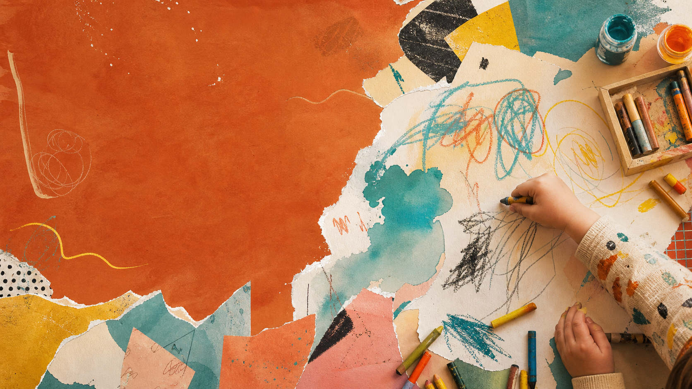

2–6岁
家庭美育
现场话术
使用说明
这份手册怎么用？
当你快要脱口而出“别画了”的时候，先打开对应场景。每张卡片都按这个顺序设计：先稳住现场 → 再理解行为 → 最后给孩子一个可继续探索的边界。
急救三步
快要生气时，先做这3步
不是立刻讲道理，而是先把现场从“失控”拉回“可处理”。
- 先停住嘴把“你怎么又弄脏了”先咽回去，改成描述事实：我看到颜料跑到桌子外面了。
- 先定边界告诉孩子哪里可以继续，哪里需要停下：纸上可以画，墙上不可以。
- 再给替代不要只说“不许”，要给一个出口：我们把大纸贴到墙上，你可以画很大的线。
安全材料
可以给孩子什么材料？
不是材料越多越好，而是安全、可控、容易收尾。
安全、可洗、好收尾
大纸 / 纸箱 / 纸筒
可水洗颜料
海绵 / 旧牙刷 / 滚筒
低粘胶带
旧衣服 / 防水垫
小、硬、尖、不可控
电池 / 硬币 / 小珠子
玻璃 / 陶瓷
成人剪刀
永久马克笔
尖锐金属物
小件材料要数两遍
所有小件材料，用前数一遍，用后再数一遍。
禁句替换表
这些话，换一种说法
不是为了永远温柔，而是让孩子更愿意继续表达。
不要说：你画的是什么？可以说：你愿意给我介绍一下这张画吗？
不要说：怎么又弄这么脏？可以说：我看到颜料跑到桌子外面了，我们给它找一个可以弄脏的地方。
不要说：不像，妈妈/爸爸帮你改一下。可以说：你最想让我看到哪里？
不要说：别浪费颜料。可以说：你想试试颜色混在一起会变成什么，对吗？
不要说：你看别人画得多好。可以说：每个人画出来的办法都不一样，我们先看看你的办法。
按场景查
按你家的情况查一张急救卡
收尾清单
让艺术现场恢复可生活
收尾不是惩罚，而是把材料、身体、空间和情绪一起带回秩序里。
- 材料回家：笔盖盖上，颜料盘冲洗，剪刀合上归位。
- 身体回家：手、脸、脚检查一遍，指甲缝最后清。
- 空间回家：湿巾先收颜料，再用清水擦；地面确认不滑。
- 作品回家：孩子选一张留下，其余拍照归档或变成拼贴材料。
- 情绪回家：用一句话收束：“今天你发现了颜色/线条/纸的新玩法。”
什么时候需要进一步观察
乱涂乱画本身通常不是问题。真正需要关注的是：在多个场景中持续出现明显的交流、回应、动作协调或感官反应困难，并影响日常生活。若家长长期担心，请带着具体观察记录咨询儿保或发育行为专业人员。
小红书互动
保存这份手册前，记住一句话
孩子乱涂乱画时，先处理边界，再处理作品。
如果你想判断孩子现在的绘画状态，可以回到小红书私信：孩子年龄 + 困惑场景 + 一张作品图。
回小红书私信 Haven 关键词：乱涂